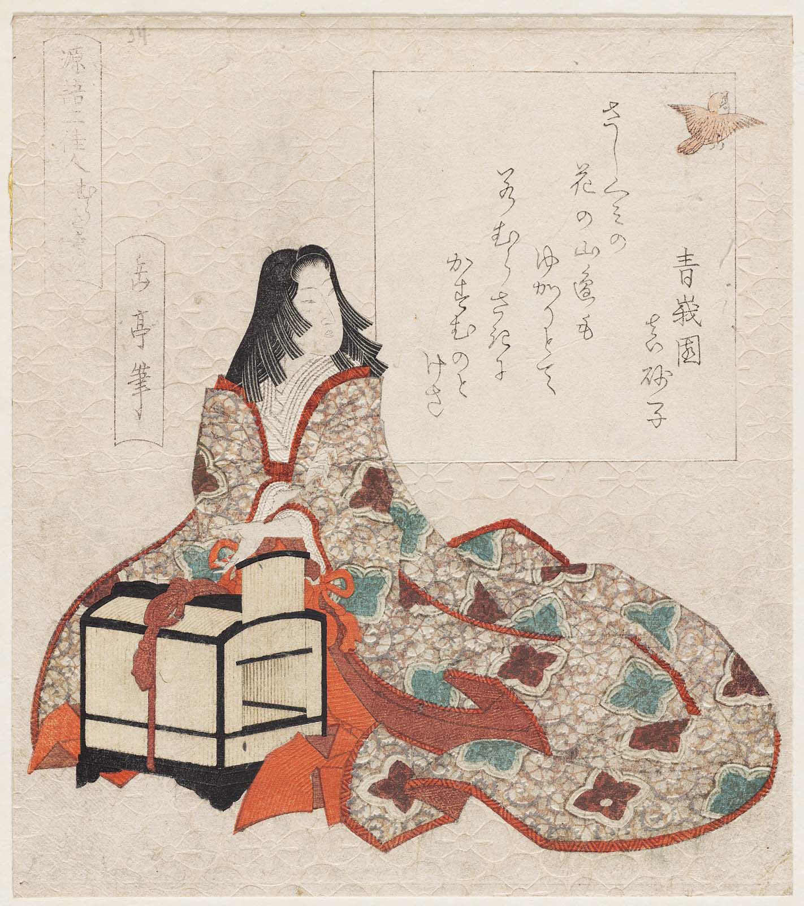
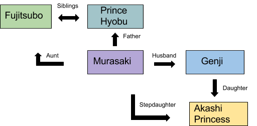
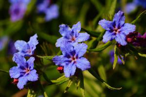
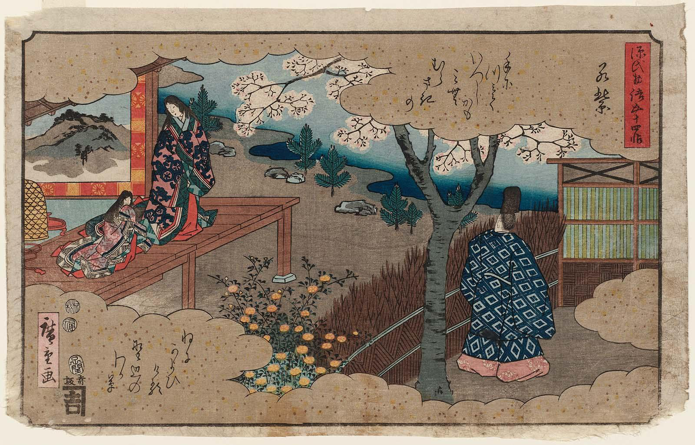

Background After her mother died when she was very young, Murasaki lived under the care of her grandmother. When she was about ten years old Genji became infatuated with her and, after many attempts to convince her family to allow him to become her guardian, he kidnaps and raises her, eventually taking her as his wife. She quickly becomes his favorite and gains an impeccable reputation for her beauty and her manor. After Aoi’s death, Murasaki becomes Genji’s primary wife. Although she would get jealous at times, they were thought to be the perfect couple.
 Murasaki no ue, from the series Two Beauties from the Tale of GenjiBy Gakutei Hitsu
relationship map of Murasaki 
Wakamurasaki
Introduced into the story at a very young age, the reader experiences Murasaki’s upbringing, and gets to see her mature and become the person she is at the end of her life.
She is first introduced in the ‘Wakamurasaki’ chapter. After Genji takes her back to his residence to raise her as a daughter (and eventually as a wife) he begins calling her his ‘little Murasaki.’ ‘Murasaki’ is the Japanese word for ‘gromwell’, which is a small purple flower traditionally used to dye clothing. This was a special flower as during the Heian period only the empress and her ladies in waiting were allowed to use its dye. The flower itself is small, cute, and elegant, much like the childish Murasaki that Genji first takes in to his home.
In modern Japan the word ‘murasaki’ refers to the color purple, which symbolizes connection, suggesting something about the importance of Genji and Murasaki’s relationship. Genji is first captivated by the young Murasaki because she resembles her aunt, Fujitsubo, who Genji is madly in love with at the time. ‘Fuji’ is the Japanese word for ‘wisteria’, another beautiful purple flower. It is worth mentioning, however, that wisteria is a lighter shade of purple than the gromwells.


Murasaki (Gromwell) Fuji (Wisteria)

Wakamurasaki, from the series The Fifty-four Chapters of the Tale of Genji
Hiroshige
The Spring
As the story progresses, and as she matures, Murasaki is compared to other flowers besides the purple gromwell that she is named after.
“If he were to compare her to a flower, he supposed it would be to a cherry
blossom--and yet she was so much lovelier than any flower.” (720)
It is clear that Murasaki’s favorite season is spring, and the story makes sure to highlight the relationship between Murasaki and her spring garden. In fact, the connection between the two is so strong that Murasaki comes to be a representation of the spring itself.
“In the dim light of early dawn, flowers of many hues could be seen peeking through
breaks in the mist, their fragrant beauty reminding Murasaki that spring was the season
that enchanted her heart.” (Minori 854)
“It was now past the twentieth day of the third month, and the atmosphere
of the spring garden in front of Murasaki’s residence--the colors of
the flowers and blossoms, the songs of the birds--was astonishing,
surpassing all expectations.” (Koscho 497)
Murasaki’s association with spring becomes so strong that after her death, others are not able to enjoy the season that usually brings them so much happiness and wonder.
“The one who always lavished praise
Upon these blossoms here is gone
Why should the spring care to visit me.” (Maboroshi 865)
“Feigning ignorance of her passing, the warbler
Still comes to the house of the lady who planted
This red plum tree and admired its fragrant blossoms”(Maboroshi 868)
Genji especially cannot enjoy the beauty of the spring; it seems wrong that it should exist without Murasaki, as she is the spirit of the spring in his eyes. This transformation from Genji’s little purple gromwell to the beauty of all of the spring flowers combined shows how much Murasaki grows in front of the reader’s eyes, and how important she becomes to Genji.